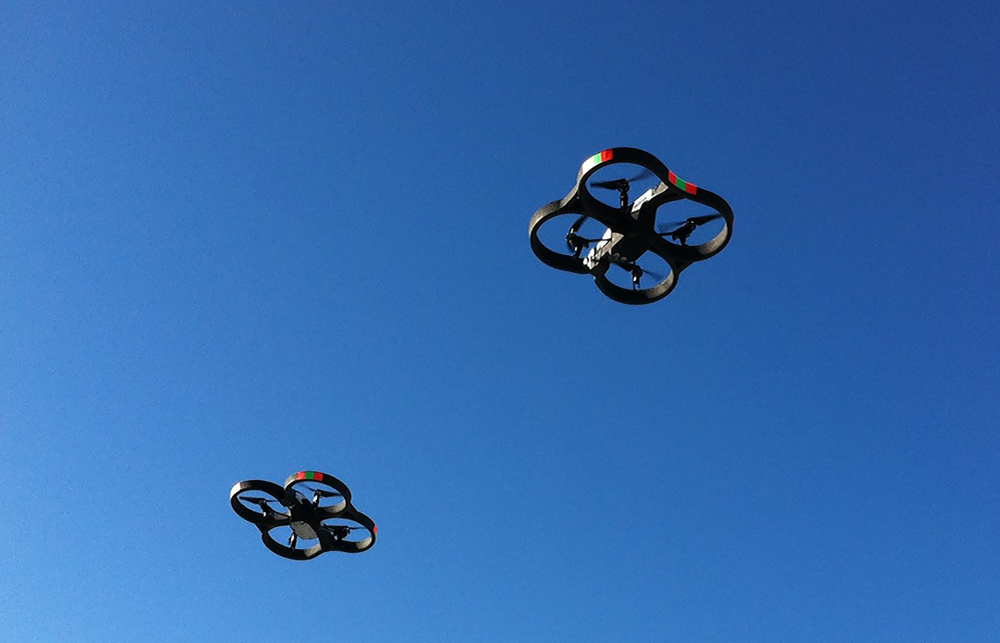

Registering drones that could pose safety risks “makes sense, but it should not become a prohibitive burden for recreational users who fly for fun and educational purposes and who have operated harmoniously within our communities for decades”, Dave Mathewson, executive director of the Academy for Model Aeronautics, said in a statement. The FAA signed an agreement last month with CACI International Inc, an information technology company in Arlington, Virginia, to test technology that could locate the operators of small drones that are flying illegally near airports. The technology would let the government track radio signals used to operate drones within a 5-mile (8km) radius and identify the operator’s location. GET MORE.
Drones have been a huge fight to some people for a long time. Some people believe that they feel like they're being spied on and want to limit the use of drones for both businesses and personal use. There are already laws for "peeping toms" and for flying Drones in general. One case of this happened in Seattle, where a drone pilot was contracted to get pictures to help the contractor build a new skyline. A lady called the cops after spotting the drone while changing cloaths. She was scared that people have the ability to spy on her while she was changing using drones. The pilot did claim that there were no topless pictures of her, but also assured that this won't really be a problem unless he had the drone a lot closer than where he had it. The cameras on the drones have weak lenses and can't capture images from very far way. Also. That drones are only really used for hobbies if it's used personally but businesses use them for planning big projects like constuction.
